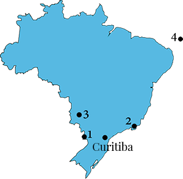
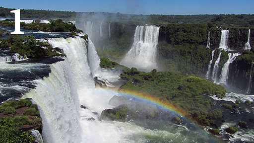
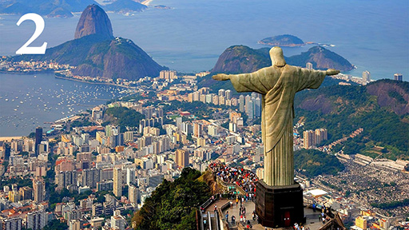
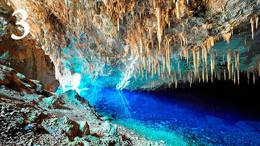
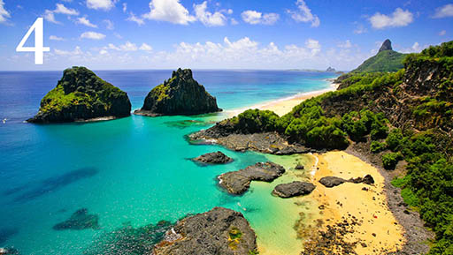
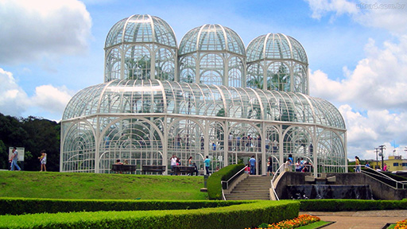
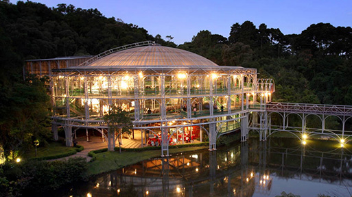
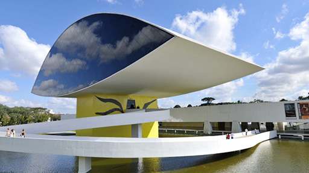
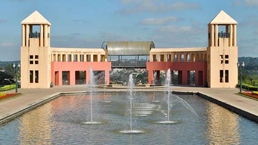

Brasil és el cinquè país més gran del món, tant per area geogràfica com per populació.
Fa frontera amb tots els altres paissos de sudamèrica excepte Ecuador i Chile.
Populació: sobre 200 millons d'habitants.
Moneda: real brasileny (R$). Avui en dia, la moneda està desvaloritzada: 1 € = 4 R$ fent tot més barat pels extrangers.
Religió: catòlica - quasi el 70% de la populació. És el pais amb la comunitat Catòlica Romana més gran del món.
Per volar a Brasil, la millor manera és buscar un vol cap a Sao Paulo. Desde Barcelona, els vols costen uns 600€ en aquest periode de l'any, desde Zurich uns 700CHF. Desde Sao Paulo, es pot agafar un vol cap a Curitiba (uns 45min) amb una aerolínia local. El preu és d'uns 30€. Comprar vols locals és a vegades complicat per persones que no viuen a Brasil. La majoria de les companyies aèrees demanen una identificació brasilenya o pagar amb tarjeta de crèdit de banc brasileny, i sovint els preus pugen quan es canvia de país a la web. No dubteu en demanar-nos consell per comprar-los!
Brasil té bastants llocs que val al pena visitar. A sota hem llistat possibles destins. Fernando de Noronha està bastant lluny, però l'hem inclòs perquè és un lloc molt especial per nosaltres, és on ens vam comprometre a casament!
Pels que puguin venir al nostre casament i passar uns 10 dies per Brasil, recomanem visitar Foz do Iguaçu e Rio de Janeiro. A l'Agost la temperatura és agradable (us 25°C en comptes de 40°C a l'estiu), i els hotels més barats.
Estem a disposició per ajudar-vos al que sigui! Si us plau no dubteu en demanar-nos qualsevol cosa!


Foz do Iguaçu es coneix internacionalment per les cascades de Iguaçu, que consisteixen en aproximadament 257 cascades en 2.7 km, i la central hidroelèctrica de Itaipú.
La ciutat fa frontera amb Argentina i Paraguay.
Com arribar-hi: Foz do Iguaçu és a aproximadament 8h en cotxe de Curitiba té aeroport.
Temperatura mitja a l'Agost: 25°C

Rio de Janeiro is known for its natural settings, including the Sugarloaf mountain, the statue of Christ the Redeemer atop Corcovado mountain, the Sambadrome and the beaches of Copacabana and Ipanema.
Rio de Janeiro will host the 2016 Summer Olympics (05.08 – 21.08).
How to get there: Direct flights from the main cities.
Average temperature in August: 22°C

Bonito is a city for ecotourism. Its principal attractions are the natural landscapes, snorkeling in crystal clear water rivers, waterfalls and caves.
How to get there: the easiest way is to fly to Campo Grande and drive from there (300 km).
Average temperature in August: 25°C

Fernando de Noronha is an archipelago of 21 islands and islets in the Atlantic Ocean, 354 km (220 mi) offshore from the Brazilian coast. It is known because of its wonderful beaches and the big variety of marine life. The Island is ecologically protected and the number of access for visitors is limited.
How to get there: Travellers can get to Noronha by plane from Recife.
Average temperature in August: 25°C
Curitiba is the capital and largest city of the Brazilian state of Paraná, and sits on a plateau at 934 meters above sea level, approximately 110 km from the Atlantic Ocean. The city's population numbered approximately 2 million people. In the 1850s, waves of European immigrants arrived in Curitiba, mainly Germans, Italians, Poles and Ukrainians, contributing to the city's economic and cultural development.
Main touristic sights:




Population: 1.8 million inhabitants
Average temperature in August: 15°C. It is impossible to predict the weather in Curitiba. Some winter days are warmer than some summer days.
For marriages, women normally wear summer dresses with a scarf.
There are many hotels in Curitiba, in a wide price range. Please find below some hotels in different parts of the city. We are available to any kind of support